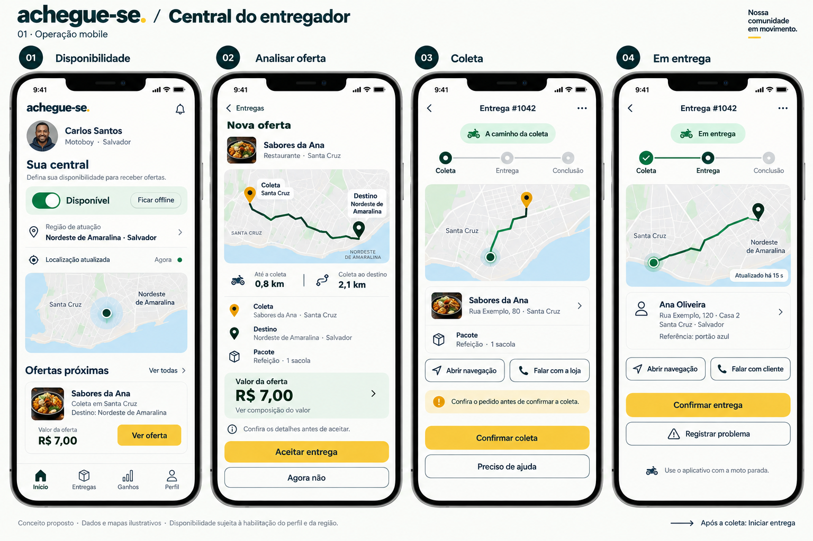
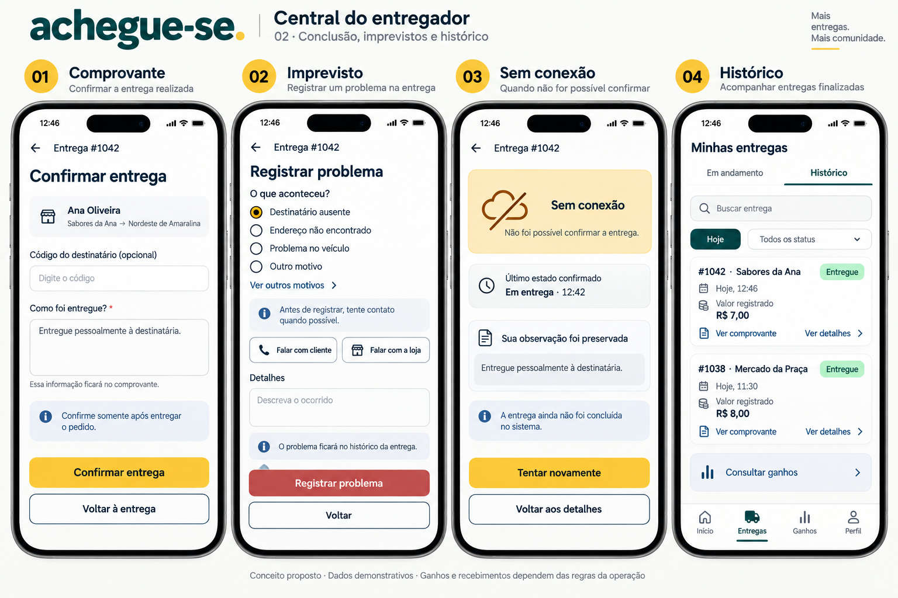
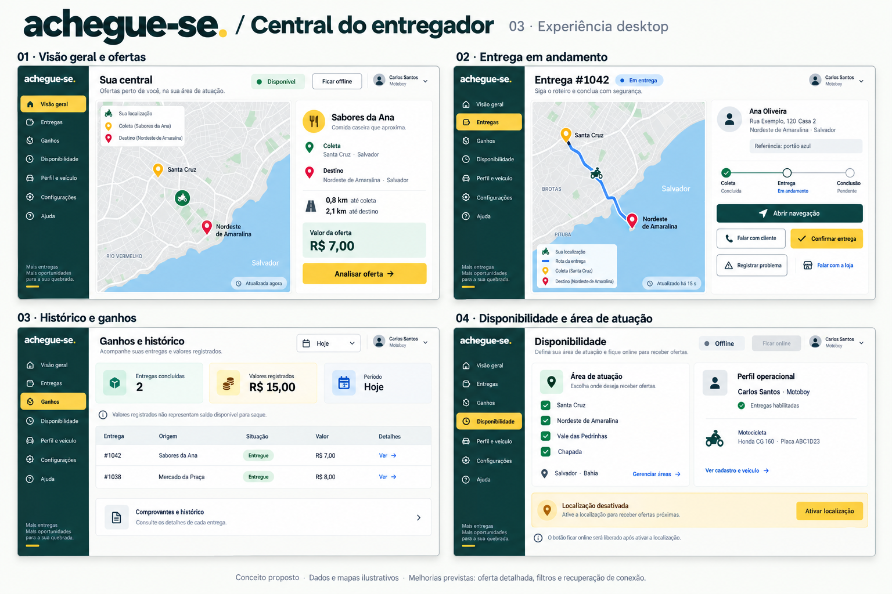

← CatálogoCentral do entregador
Disponibilidade, ofertas, coleta, rota, problema, histórico e falha de conexão. Não misturar entregas da loja com ofertas da rede sem identificação.
Documento da página · Registro da revisão

034-central-entregador-inicial · Histórico — não aplicar automaticamente 035-central-entregador-mobile · Referência para revisão
035-central-entregador-mobile · Referência para revisão
036-central-entregador-estados · Referência para revisão
037-central-entregador-desktop · Referência para revisão